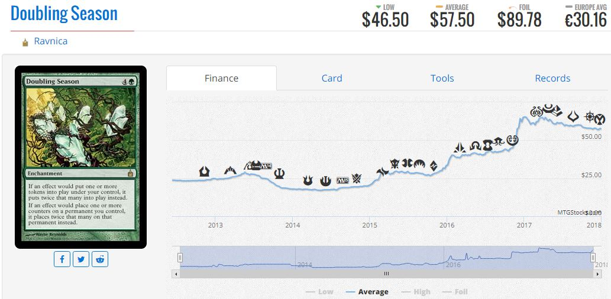

Introduction
Aside from the three major competitive formats, the most popular way to play Magic is in non-sanctioned, casual games. Many people disregard casual formats such as Elder Dragon Highlander (EDH) as a serious format that can affect the secondary market in any significant way, but there is ample evidence to refute this. In fact, the vast majority of middle value cards that are rotated out of standard derive their value from casual play, and there are some incredibly expensive cards that see absolutely no competitive play, and are expensive because they are casual staples.  Doubling Season is a card that sees absolutely no play in Modern or Legacy, but due to its widespread appeal in casual play, has shot to a $60.00 price tag. Cards like Doubling Season, with huge, flashy effects that are too mana-intensive for constructed play are the ones that shine in casual formats and often fetch the highest prices. Another example of this effect isCopyright 2017 Ian Rickles